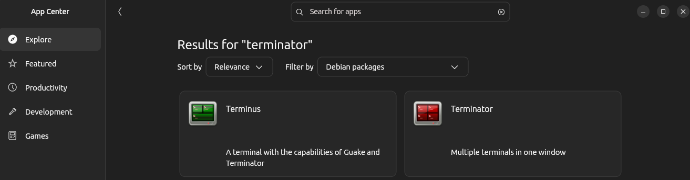

Clase 1: Introducción a ROS 2 y Setup
Objetivos de la clase
- Introducción a ROS 2
- Instalación del entorno.
- Teleoperar Turtlesim desde la terminal.
¿Qué es ROS2?
ROS 2 (Robot Operating System 2) es una capa de software que corre sobre Linux o windows, utilizando el middleware DDS como base para la comunicación entre procesos.
ROS 2 funciona como el "sistema nervioso" de un robot. Permite que los diferentes componentes de la máquina (como cámaras, sensores, motores, unidades de procesamiento y algoritmos de inteligencia artificial) se comuniquen entre sí de forma rápida y ordenada.
Ecosistema ROS 2
- Paquetes (packages): Componentes de software reutilizables que contienen nodos, configuraciones, interfaces, etc.
- Nodos (nodes): Programas individuales que se comunican entre sí.
- Topics: Canales para mensajes unidireccionales y asíncronos.
- Services: Para llamadas sincrónicas tipo request-response.
- Actions: Para tareas que pueden tomar tiempo y requieren feedback (como mover un brazo).
- Launch files (Python): Permiten iniciar múltiples nodos con configuraciones específicas.
Instalación de Ubuntu
Para el funcionamiento de ROS2 es necesario instalar Ubuntu. En este curso trabajaremos con Ubuntu 22.04 y ROS Humble.
Link para instalacion en Dual-Boot: Dual-BootComandos básicos de Linux
ls: Listar archivos y directorios.cd: Cambiar de directorio.pwd: Mostrar el directorio actual.mkdir: Crear un nuevo directorio.rm: Eliminar archivos o directorios.mv: Mover o renombrar archivos o directorios.touch: Crear un nuevo archivo.ifconfig: Mostrar la configuración de red.
cd /home/ # te lleva al directorio Home.
mkdir nuevo_directorio
rm archivo.txt # elimina el archivo archivo.txt.
rm -r carpeta # elimina una carpeta y su contenido.
mv archivo.txt /ruta/destino/ # mueve archivo.txt a la ruta especificada.
mv archivo.txt nuevo_nombre.txt # renombra archivo.txt a nuevo_nombre.txt.
touch nuevo_archivo.txt
Instalacion de aplicaciones necesarias
Desde la app Center buscar "Terminator" filtrando por "Debian packages"

Para instalar Visual Studio Code
Visual Studio Code- Descargar el paquete .deb
- Instalarlo con el comando:
sudo apt install ./.deb
Instalación de ROS2 Humble
Pagina oficial de ROS2 Humble
Para instalar ROS2 Humble, sigue los pasos oficiales de la documentación:
- Fuentes de configuración
- Configurar los repositorios de Ubuntu
- Agregar el repositorio de ROS 2 a su lista de fuentes
- Instalar ROS 2 Humble
- Herramientas adicionales
- Configurar el entorno de ROS 2
- Verificar la instalación de ROS 2
Añadir el repositorio ROS2 apt a su sistema.
Primero asegúdese de que el repositorio de Ubuntu Universe esté habilitado.
sudo apt install software-properties-common
sudo add-apt-repository universe
ROS 2 depende de algunas herramientas adicionales. Primero, debe asegurarse de que su sistema esté completamente actualizado y tenga las herramientas necesarias.
sudo apt update && sudo apt install curl -y
export ROS_APT_SOURCE_VERSION=$(curl -s https://api.github.com/repos/ros-infrastructure/ros-apt-source/releases/latest | grep -F "tag_name" | awk -F'"' '{print $4}')
curl -L -o /tmp/ros2-apt-source.deb "https://github.com/ros-infrastructure/ros-apt-source/releases/download/${ROS_APT_SOURCE_VERSION}/ros2-apt-source_${ROS_APT_SOURCE_VERSION}.$(. /etc/os-release && echo ${UBUNTU_CODENAME:-${VERSION_CODENAME}})_all.deb"
sudo dpkg -i /tmp/ros2-apt-source.deb
Actualizar el indice de contenidos
sudo apt update
Actualizar el sistema
sudo apt upgrade
Instalar ROS 2 Humble
sudo apt install ros-humble-desktop
sudo apt install python3-colcon-common-extensions
sudo apt install ros-dev-tools
Para que ROS 2 funcione correctamente, debes agregar su entorno a tu terminal. Esto lo puedes hacer editando el archivo ~/.bashrc o ejecutando este comando en cada nueva terminal que abras:
bash
source /opt/ros/humble/setup.bash
Para que este cambio sea permanente, agrega la línea anterior al final de tu archivo ~/.bashrc:
echo "source /opt/ros/humble/setup.bash" >> ~/.bashrc
Luego, para aplicar los cambios, ejecuta:
source ~/.bashrc
Para asegurarte de que ROS 2 se instaló correctamente, puedes intentar correr un nodo de prueba. Primero, abre una terminal nueva y ejecuta:
Luego, inicia una instancia del nodo talker (publicador):
ros2 run demo_nodes_cpp talker
En otra terminal, inicia una instancia del nodo listener (suscriptor):
ros2 run demo_nodes_cpp listener
Si todo está funcionando correctamente, deberías ver mensajes siendo publicados y recibidos entre los dos nodos.